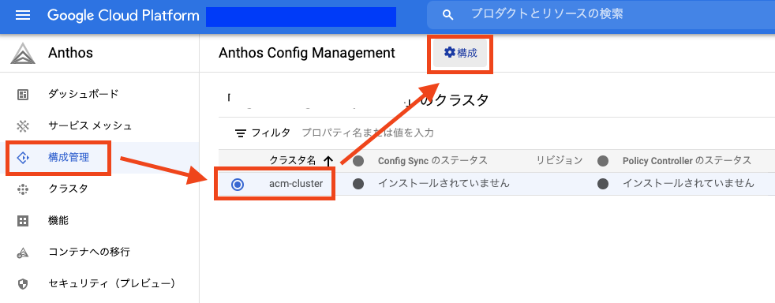
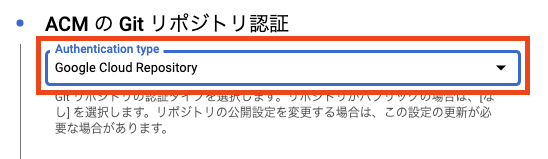
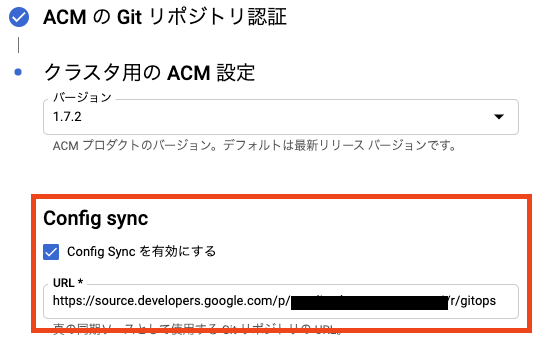

必要な gcloud コンポーネントをインストールしてください。
gcloud components install kubectl alpha nomos
このラボでは Config Sync について学びます。
Config Sync は Anthos Config Management のコンポーネントのひとつであり、GitOps の機能を Kubernetes に提供します。
このラボでは Config Sync を使って Source Repository にある Kubernetes のマニフェストを GKE クラスタに自動で適用します。
使用するプロジェクトを設定してください。
gcloud config set project YOUR-PROJECT
利用するサービスの API を有効化します。
gcloud services enable \ anthos.googleapis.com \ container.googleapis.com \ sourcerepo.googleapis.com
Anthos Config Management を有効化します。
gcloud alpha container hub config-management enable
Config Sync を適用する GKE クラスタを作成します。
gcloud container clusters create acm-cluster \ --region asia-northeast1 \ --workload-pool $(gcloud config get-value project).svc.id.goog \ --scopes gke-default,cloud-source-repos-ro
操作しているユーザーにcluster-adminのロールを付与してクラスタを管理できるように ClusterRoleBinding を作成します。
kubectl create clusterrolebinding cluster-admin-binding \ --clusterrole cluster-admin \ --user $(gcloud config get-value account)
作成した GKE クラスタを Anthos に登録します。
gcloud beta container hub memberships register acm-cluster \ --gke-cluster asia-northeast1/acm-cluster \ --enable-workload-identity
Kubernetes のマニフェストを管理するための Source Repository を作成します。
gcloud source repos create gitops
Config Sync にはリポジトリへの読み取り権限が必要です。 このラボではサービスアカウントを利用して権限を付与します。
gcloud projects add-iam-policy-binding $(gcloud config get-value project) \ --member serviceAccount:$(gcloud projects describe $(gcloud config get-value project) --format "value(projectNumber)")-compute@developer.gserviceaccount.com \ --role roles/source.reader
今回の GKE クラスタは Workload Identity が有効になっているため Google サービスアカウント と Kubernetes サービスアカウント を紐付ける必要があります。
gcloud iam service-accounts add-iam-policy-binding \ $(gcloud projects describe $(gcloud config get-value project) --format "value(projectNumber)")-compute@developer.gserviceaccount.com \ --role roles/iam.workloadIdentityUser \ --member "serviceAccount:$(gcloud config get-value project).svc.id.goog[config-management-system/importer]"
Config Management にアクセスして acm-cluster を選択して 構成 をクリックしてください。

ACM の Git リポジトリ認証の Authentication type に Google Cloud Repository を選択して続行ボタンをクリックしてください。

Config Sync を有効にするにチェックを入れて、URLに次のコマンドの結果を入力してください。
gcloud source repos describe gitops --format "value(url)"

完了 ボタンをクリックしてください。